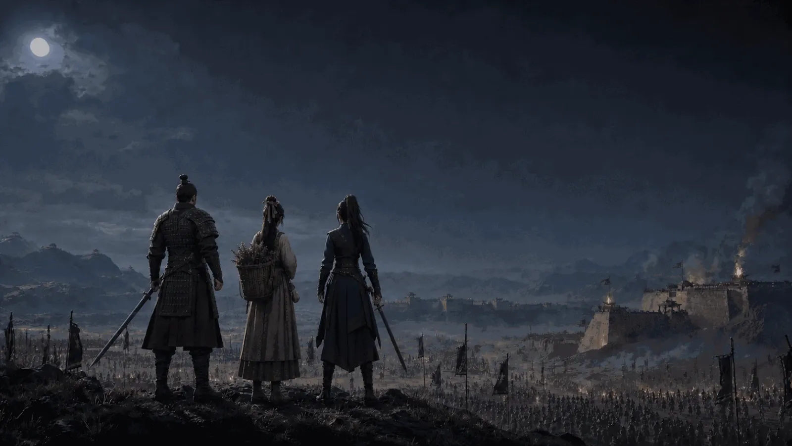

所作
题材只做战国 · 手段全靠 AI短视频
名将、谋士、合纵连横。从人物立绘、分镜到配音配乐，做成几分钟能看完的故事。
做游戏
把史书里的名场面变成玩法：长平的纸上谈兵、即墨的火牛阵，都能亲手打一遍。
谈工具
古装人物怎么出图不撞脸，战国场景的提示词怎么写，做历史内容踩过的坑都记下来。

用 AI 讲战国，把史书里的名场面做成能玩的游戏。
名将、谋士、合纵连横。从人物立绘、分镜到配音配乐，做成几分钟能看完的故事。
把史书里的名场面变成玩法：长平的纸上谈兵、即墨的火牛阵，都能亲手打一遍。
古装人物怎么出图不撞脸，战国场景的提示词怎么写，做历史内容踩过的坑都记下来。